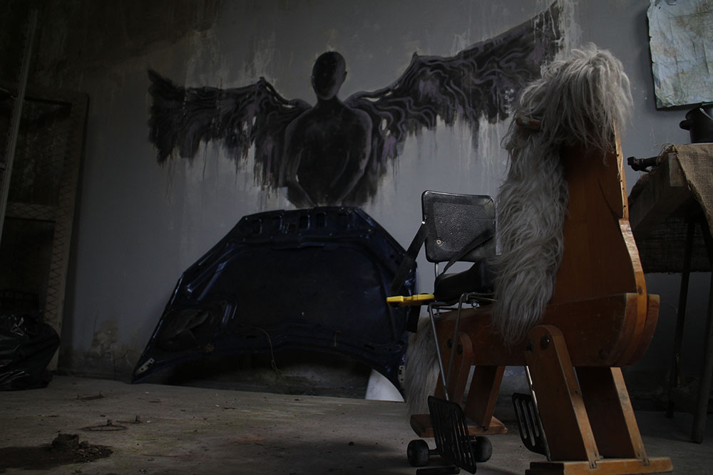
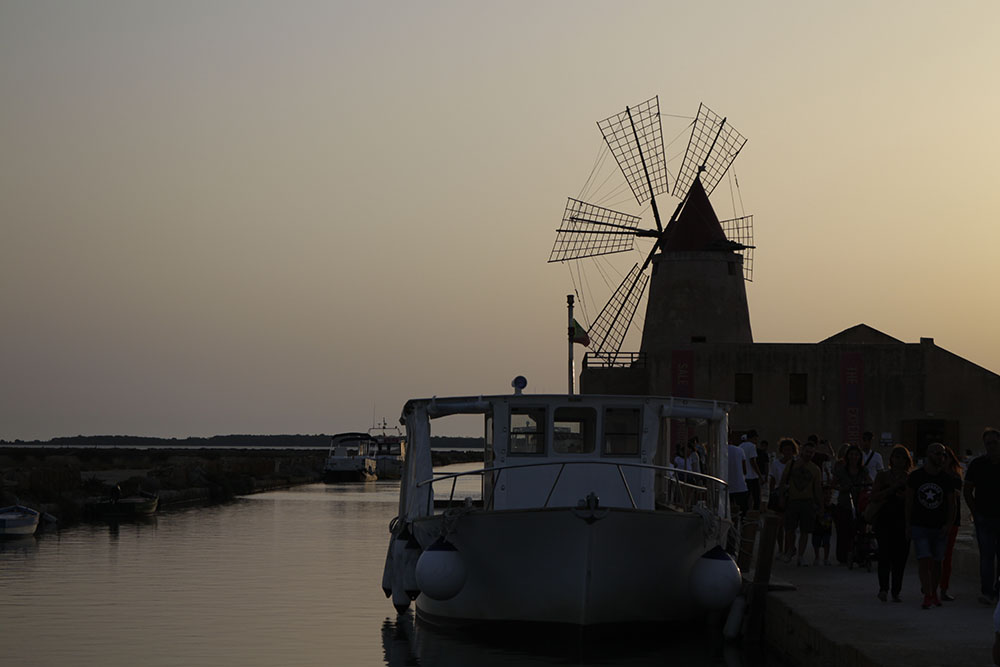
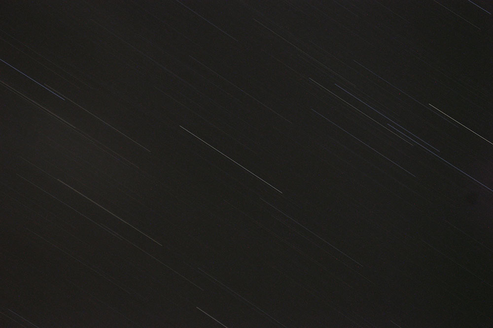
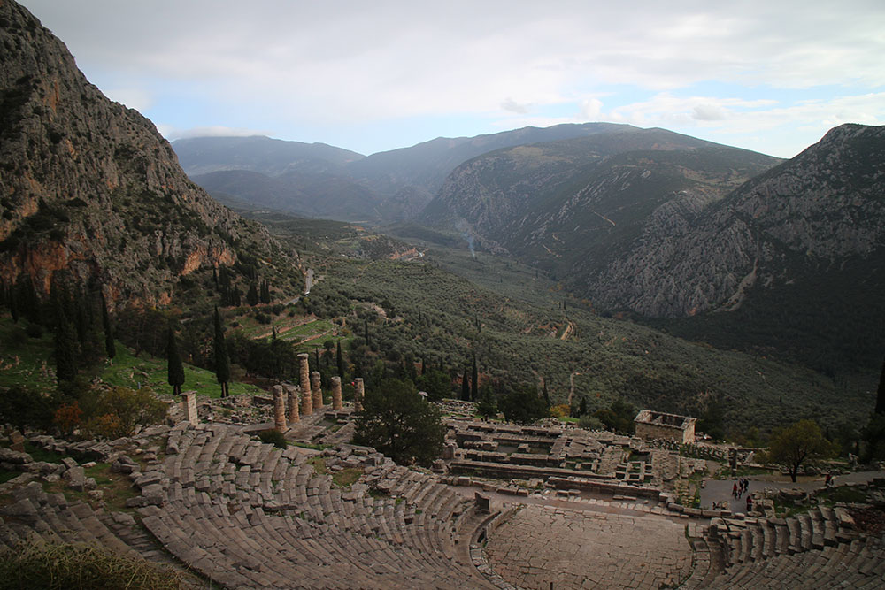
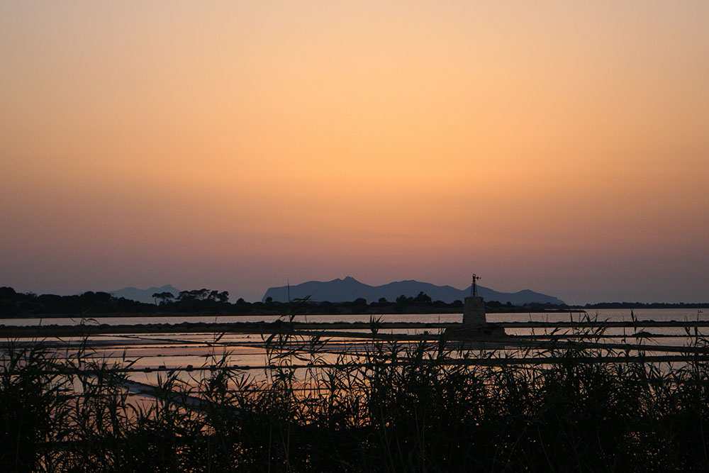

I've always kinda had the hobby of photgraphy. My father has always had this passion, so I think I got my hobby from him.
I attended a couple of photography courses during high school, where I learned the basics of photography. I don't consider myself
a super good photographer, but I'm not that bad either. Well, this is true when it comes to an amateur level of photography; I obviously
don't even think of measuring up with professionals. Still, here are some of my shots that I think are quite decent.

A photo took on the set of a movie I'm doing the backstage for.
The movie has yet to be released, so I can't show anything else.

A windmill at the saltworks located between Marsala and Trapani, Sicily.

Long exposure shot of the starry sky, Sicily.
Late afternoon in Matera, Basilicata, Italy.

A view of the valley next to Delfi, Greece

A view on the saltworks located between Marsala and Trapani, Italy.

A macro of a flower, France.
A couple's kiss in front of the sunset, Greece.
❮
❯
Strange things happen in life, and I defenitely have my share. In 2017, a fire broke out in the flat
complex next to the one I live in; as you can see below, the fire was pretty big, and it was spreading very fast. Luckily,
the fire fighters got on the place in time, otherwise both the flat complexes would have burnt to a crisp. I managed to take a couple of shots,
to have a memory of what could have been a disaster.